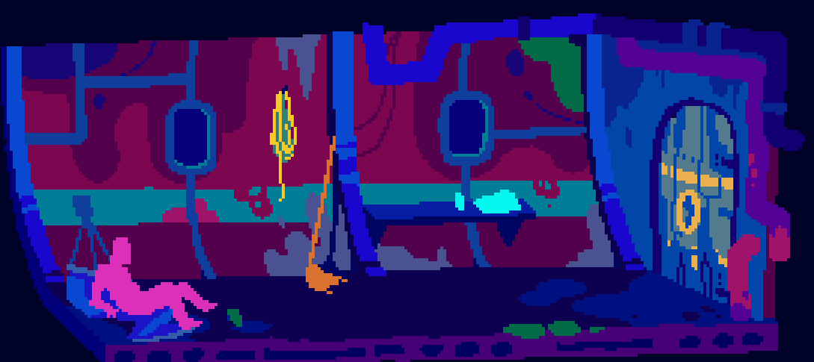
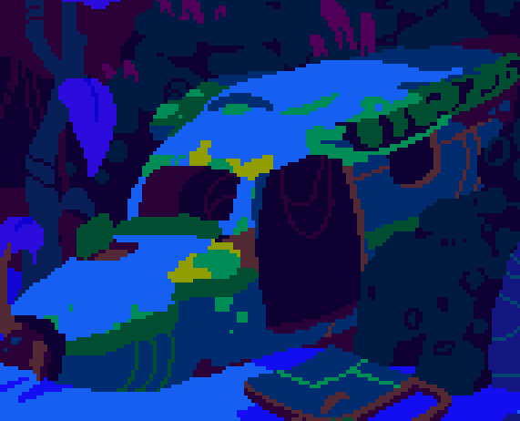
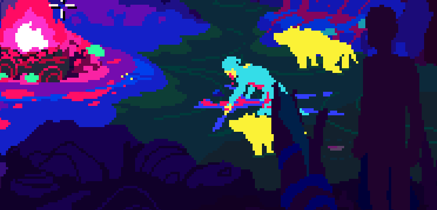
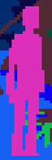
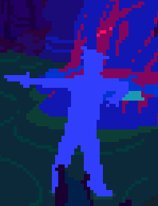
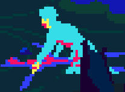

For my Game Analysis the game I had chosen from itch.io was Alluvium developed by Powerhoof. Alluvium is a very simple looking game that is extremely captivating as you take control of Ian Forrester, a civil engineer stranded in West Papua. As Ian, you endure many different challenges while attempting to find a way off of the island.
The Camp | Old Camp
The Ship
While playing through Alluvium you will come across three main locations and two sub locations. As the game starts you find Ian (yourself) stranded on a beach with a singular tent, the first location ‘Camp’. As you complete the first few tasks in hope to be seen by a passing ship Ian loses consciousness causing the screen to go dark. Ian wakes up in the second location ‘The Ship’. ‘The Ship’ is the least prevalent of the three main locations in the sense of time spent there, however without this quick change of scene you could not complete the game. The events that take place on the ship lead Ian to wash up on the same beach he was stranded before, distraught as freedom was so close. It is upon arriving at ‘The Camp’ one again that the third of the main locations is unlocked ‘Old Camp’. Here you see mutilated corpses of others who were stranded along with Ian creating many more questions from the player and making the game even more intriguing.
 The Fuselage | Dam Wall
The first of the two sub locations is ‘The Fuselage’ (the main body of a plane), this location is used as a doorway from ‘The Camp’ to the ‘Old Camp’. The second sub location is the ‘Dam Wall’, this location is briefly used for the very end of the game.
  Ian Forrester | Ship Crew | Ship Captain | Anna
Throughout the game there are a total of four sets of characters throughout the game, the first obviously being Ian the controllable character. While on ‘The Ship’ you encounter three members of the ‘Ship Crew’, this part of the game is very short as Ian escapes the ship as its inhabitants are hostile and have taken Ian prisoner. After you escape the ship and wash up on the shore of ‘The Camp’ once again you can now travel through ‘The Fuselage’ to the ‘Old Camp’ where you meet the Ship Captain. The Ship Captain believes you are responsible for the mutilation at the ‘Old Camp’ and holds you at gunpoint. This is where the fourth character arrives, Anna. Anna, a survivor of the plane crash with Ian appears out of nowhere killing the Ship Captain only to start eating him, the survivors of the crash apart from Ian had resolved to cannibalism.
Cleaver | Gun | Rope and Pilots Helmet combined

Mop | Pain Killers | Palm Leaf
Pilots Head | Propeller | Spear
Throughout the game you are constantly searching for items that you can pick up that will aid you on your adventure. Certain items can be combined together to create a useful tool such as the ‘Rope and Pilots Helmet’ which was combined to attempt to retrieve ammunition while on the ‘Dam Wall’. These items add a great deal of extra challenge into the game as many of them need assistance from a previously found item to obtain such as finding the ‘wrench’ and using it to remove the propeller from the crashed plane.
While playing Alluvium, in my personal opinion there is not much that I would change or suggest to be changed. The biggest downfall of the game is its length, the game is very intriguing and fun but it can be easily completed within thirty minutes leaving myself and I could assume others want more. I experienced one singular bug that froze the game which was easily fixed by exiting and reloading the game and, this bug had only happened once the first time I had opened the game. The controls of the game are very basic being a click to move game only using your mouse, this made it easier to focus on the game and enjoy it rather than having to constantly try and remember an abundance of controls. Alluvium is a great game that I would highly recommend to anyone in need of a fun and intriguing game.